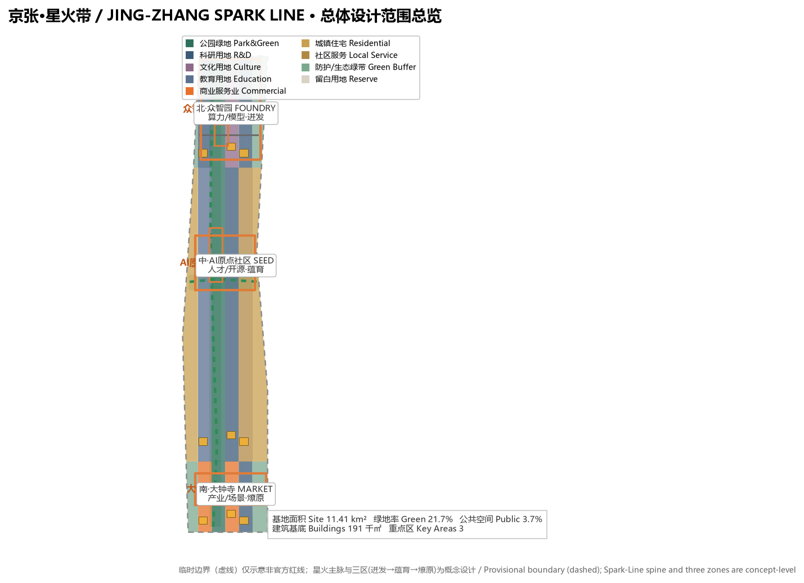
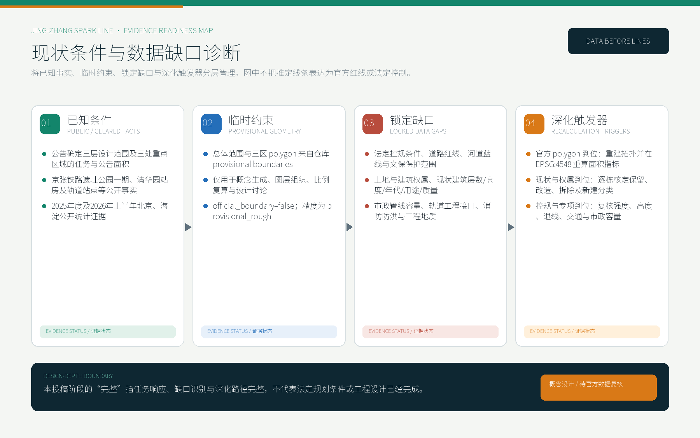
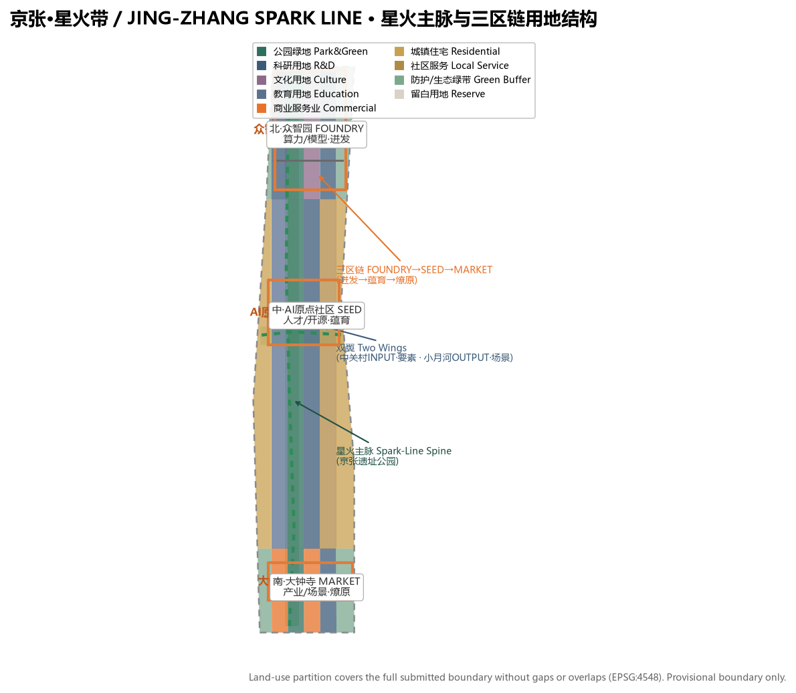
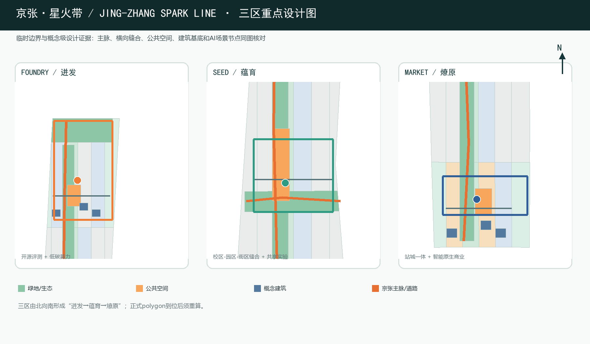
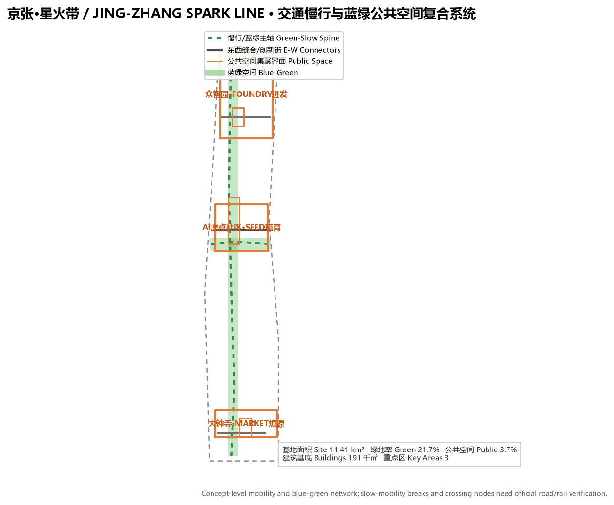
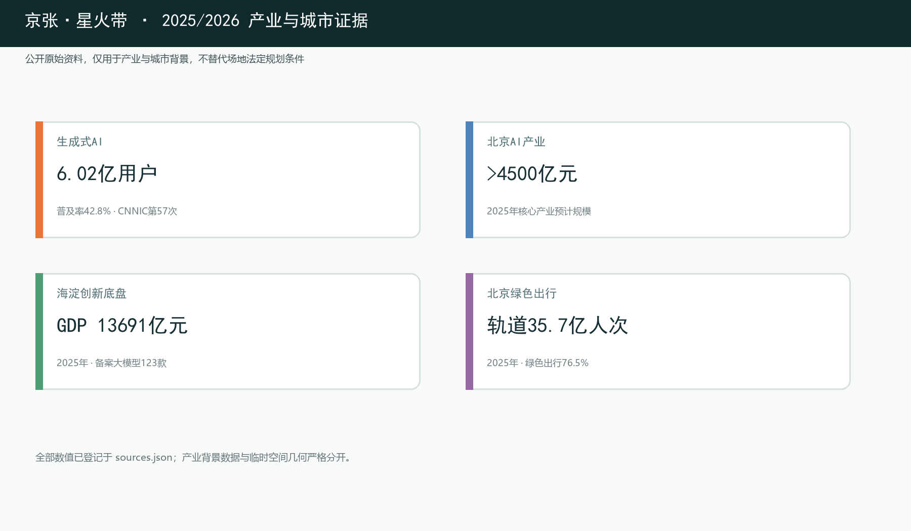

总览地图 · 京张·星火带空间结构
总览地图将总体设计范围、三处重点区域、用地分区、交通慢行与蓝绿公共空间、AI场景节点放在同一张证据图中，便于快速理解空间主线。

现状条件与数据缺口诊断
已知事实、临时范围、锁定缺口和深化触发器分层管理。constraints.geojson 保持空集合，因为当前没有可信官方控规、道路红线、蓝线或文保范围几何；这是一项防止虚构约束的质量控制。

核心指标
核心空间指标由提交几何在 EPSG:4548 下复算；绿地与公共空间比例支撑人才交往与生态品质，建筑基底为概念级设计量，非法定控制值。
自检状态
deterministic validation、spatial review、visual packaging check 与 professional evidence review 需全部通过。当前边界：provisional geometry，仅供 intake 展示；official polygon 到位后所有面积、比例、图纸与指标需重算。
法定控制待确认
容积率、建筑高度、建筑密度、退线、道路红线与市政容量等均无官方控规条件，统一记为 status=unknown，待正式数据补齐后复算，不写成审定指标。重点项目清单与更新项目分期见 proposal.md 正文与 phasing.geojson。
三层范围工作框架
统筹研究范围聚焦43.6平方公里产业生态与未来城市形态，总体设计范围聚焦11.4平方公里城市更新与控规深度城市设计，重点区域范围聚焦368.4公顷三处片区详细设计。

统筹研究范围
面向43.6平方公里提出世界级AI创新生态、产业链协同、三区两翼与未来AI城市形态研究。
- AI创新生态体系与产业链
- 命名／Logo与视觉识别
- 未来城市形态与AI+交通
总体设计范围
面向11.4平方公里组织城市更新总体框架、产业功能布局、交通轨道市政配套与京张遗址公园活力带。
- 控规深度城市设计
- 用地、建筑与拆改留逻辑
- 蓝绿慢行与城市风貌
重点区域范围
面向三处重点片区开展详细设计，说明功能业态、建筑规模、拆改留分类、公共空间连通与交通组织。
- 众智园AI自主创新加速区
- 北京AI原点社区
- 大钟寺AI产业聚集区
重点区域详细设计
三处重点区域按规划综合实施方案的任务框架完成投稿阶段响应，分别说明定位、空间结构、建筑更新、交通慢行、公共空间、AI场景与实施风险；因范围、权属、现状建筑和法定条件缺失，不宣称已达到审批或地块实施深度。

众智园AI自主创新加速区
花园型全栈自主创新街区，承载自主模型测试、标准制定、安全治理展示与低碳算力体验。
北京AI原点社区
近校型成果转化与人才社区，组织校区园区街区慢行缝合、成果发布、人才特区与开源协作。
大钟寺AI产业聚集区
城市型智能经济与国际交往街区，围绕大钟寺站一体化、四象限步行连通与智能原生新业态。
交通慢行与蓝绿公共空间
以京张遗址公园活力带为骨架，统筹清河、小月河蓝绿廊道，识别慢行断点与跨环路节点，构建南北贯通、东西连通的复合系统。

AI时代产业与就业数据支撑
以2025年度及2026H1公开原始报告数据论证AI时代产业、就业与生活：生成式AI用户6.02亿、北京AI核心产业规模预计超4500亿元、海淀GDP 13691.4亿元且备案大模型123款、北京轨道客运35.7亿人次。全部来源在 sources.json 登记，低置信度行业估算不作为本图核心证据。

AI 场景与用户画像
面向AI人才、企业、居民与公共治理需求，提出不少于10张AI场景卡、3个产业测试验证场景与5类用户画像，均落到具体空间图层与治理边界。
原点社区面向开发者、高校和初创团队的成果发布与开源贡献展示节点。
众智园将标准制定、安全评测与模型红队测试转译为可参观、可监管的协作节点。
与公共服务、低碳能源结合的新型基础设施原型。
用可解释导视识别慢行断点、拥挤节点与无障碍需求。
服务智能体、智能终端与内容消费企业的展示、洽谈与交流。
把绿色空间、雨洪、步行骑行与AI展示结合的园区公共客厅。
面向高校成果转化，组织孵化、法务、知识产权与投融资服务。
以合规、授权、可审计为前提展示数据要素流通的城市服务界面。
将医疗、教育、法律、生活服务等AI+场景落到可运营的小尺度街区。
串联遗址文化、开源社区、产业展示与国际路演的可步行体验路线。
任务覆盖与合规矩阵
compliance_matrix.json 覆盖公告1.3、1.4、1.5与agent.1-agent.6全部必选任务；standard_matrix.json 与 design_depth_matrix.json 证明专业标准与成果深度。
| 任务 | 响应内容 | 证据落点 |
|---|---|---|
| agent.1 概念与命名 | 一带总体概念、命名体系、Logo方向、三区两翼协同回路 | proposal.md / visual / 图纸 |
| agent.2 AI全栈创新生态 | 5-8个全球案例、创新生态图谱、众智园全栈体系、中关村服务翼 | proposal.md / metrics.json |
| agent.3 AI+场景赋能 | 10+场景卡、3个测试验证场景、5类用户画像、场景-空间-运营映射 | proposal.md / scenario cards |
| agent.4 公共空间与地标 | 京张公园AI公共空间、3个AI朝圣地标、荣誉展示与组件库 | proposal.md / public_space.geojson |
| agent.5 文化叙事 | 京张铁路、中关村与AI新文化融合叙事、导视符号系统 | proposal.md / narrative |
| agent.6 长期运营 | 年度活动体系、开发者社区、场景开放、国际传播与招引转化 | proposal.md / operation |
来源
来源见 sources.json、agent_taskbook.json、data/source_registry.json 与 standards/references。本页为离线静态，不加载CDN、远程瓦片、外部脚本、外部字体或 iframe。
假设与数据缺口
待补官方边界、控规、道路红线、权属、市政、文保与工程条件，均在 assumptions.json 登记并影响正文结论；official polygon 到位后需重算全部指标。